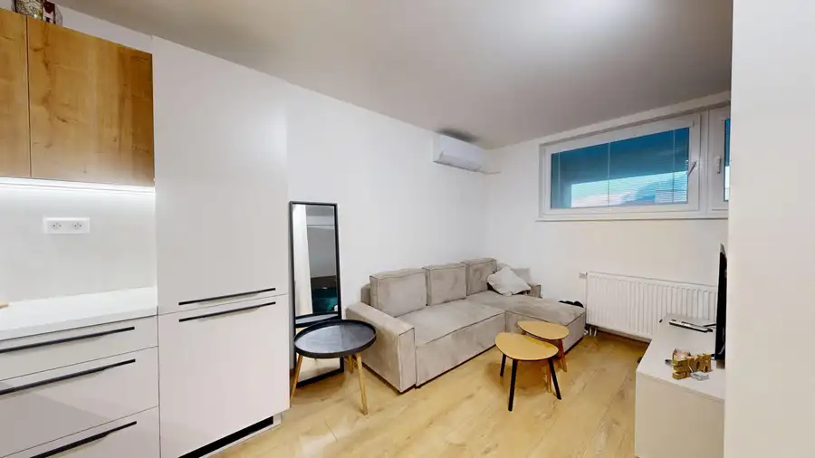
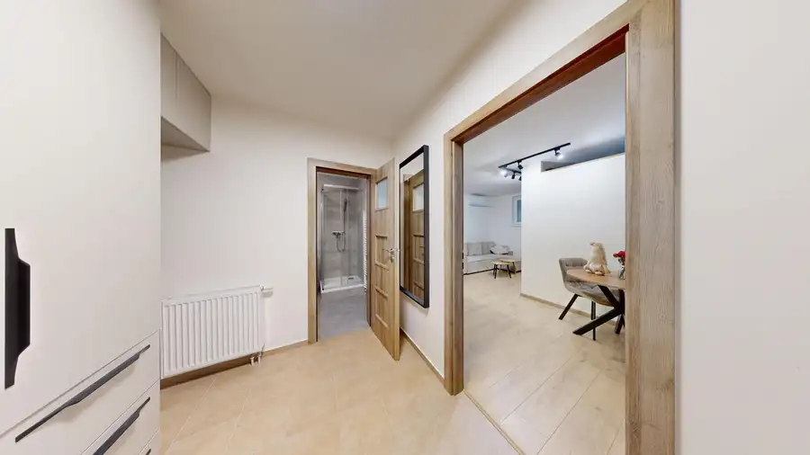
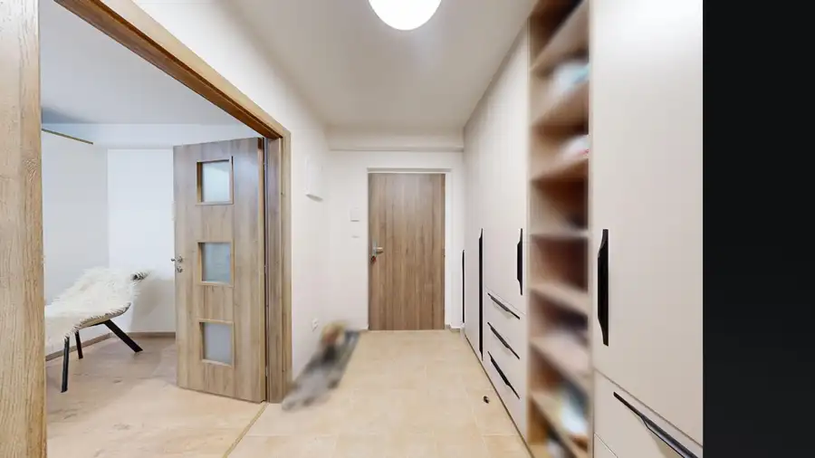
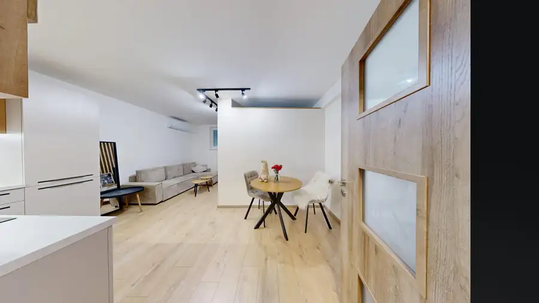
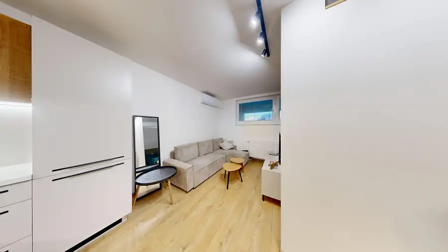
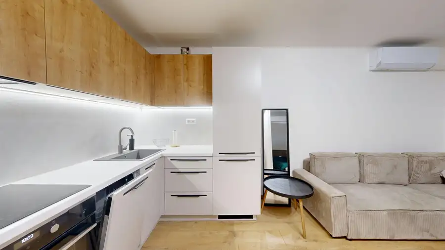

AZ. Na predaj zariadený 1-izbový byt s parkovaním v novostavbe | Nitra – centrum
Nitra






- Dispozícia1-izbový
- Plocha38 m²
- Poschodie6. z 6
- StavNovostavba
- VlastníctvoOsobné
- Energetická triedaA
O nehnuteľnosti
AZ. Ponúkame na predaj moderne riešený a kompletne zariadený 1-izbový byt s výmerou 38 m², situovaný na Cintorínskej ulici v Nitre, v lokalite Polygón, len pár minút od samotného centra mesta.Byt sa nachádza na najvyššom 6. poschodí bytového domu s výťahom a vznikol ako súčasť novšej nadstavby bytového domu. Vďaka premyslenému využitiu priestoru pôsobí vzdušne a ponúka plnohodnotné bývanie pre jednotlivca alebo pár. K bytu prislúcha aj pivnica.O komfort počas letných mesiacov sa stará klimatizácia, byt má zároveň vlastné kúrenie. Orientácia do vnútrobloku poskytuje príjemnejšie a pokojnejšie bývanie napriek polohe v širšom centre mesta.Aktuálne je byt prenajatý a obývaný nájomníkmi, vďaka čomu môže byť zaujímavou voľbou aj pre investora. Nový majiteľ tak môže po dohode pokračovať v existujúcom prenájme bez potreby okamžitého hľadania nového nájomníka. V prípade kúpy na vlastné bývanie je možné riešiť ukončenie súčasného nájomného vzťahu.Dispozícia:Byt pozostáva z: * priestrannej vstupnej chodby s veľkou vstavanou skriňou, ktorá poskytuje dostatok úložného priestoru, * kúpeľne spojenej s WC, vybavená sprchovacím kútom a práčkou, * otvoreného obytného priestoru, ktorý prirodzene prepája kuchynskú, jedálenskú, obývaciu a spaciu časť.Kuchyňa je vybavená kuchynskou linkou vyrobenou na mieru so vstavanými spotrebičmi, medzi ktoré patrí: * elektrická rúra, * umývačka riadu, * chladnička, * digestor.Obývacia časť ponúka priestor na pohodlné sedenie s TV, pričom spacia zóna je prakticky oddelená od dennej časti a disponuje manželskou posteľou. Takéto riešenie dáva bytu pocitovo väčšiu mieru súkromia, než býva pri klasických 1-izbových bytoch zvykom.Súčasťou nadstavby boli realizované nové rozvody elektriny, vody a plynu. Bytový dom je zateplený a má novšiu strechu. Mesačné náklady na energie sa podľa aktuálnych údajov pohybujú pri dvoch osobách približne na úrovni 100 € mesačne.Lokalita:Cintorínska ulica – Polygón patrí medzi veľmi praktické lokality širšieho centra Nitry, najmä pre ľudí, ktorí chcú mať centrum mesta, dopravu, obchody a služby v pešej dostupnosti.Jednou z hlavných výhod je výborná občianska vybavenosť. V bezprostrednom okolí sa nachádzajú potraviny, obchody, lekáreň, zdravotnícke a ďalšie služby, reštaurácie, kaviarne, finančné služby či rôzne prevádzky každodennej potreby. V širšom okolí Polygónu sa nachádza aj mestská tržnica.Veľkým benefitom je blízkosť OC Mlyny, kde je k dispozícii široká ponuka obchodov, služieb, gastronómie, fitness či kina. Z bytu sa zároveň pohodlne dostanete pešo do samotného centra Nitry a na pešiu zónu.Výborná je aj dostupnosť verejnej dopravy. V blízkom okolí sa nachádzajú zastávky MHD s napojením na jednotlivé časti Nitry, pričom v pešej dostupnosti je tiež autobusová a železničná stanica. Lokalita je preto veľmi praktická aj pre človeka, ktorý pravidelne dochádza za prácou alebo štúdiom a nechce byť odkázaný na automobil.V okolí sú dostupné aj materské a stredné školy, základná umelecká škola či pracoviská UKF, čo ďalej rozširuje občiansku vybavenosť tejto časti mesta.Spojenie širšieho centra, kompletnej občianskej vybavenosti, pešej dostupnosti centra a výbornej dopravnej dostupnosti robí z tejto nehnuteľnosti zaujímavú voľbu na vlastné bývanie aj dlhodobý prenájom. Cena nehnuteľnosti je 147 900,-Ďalším benefitom je možnosť dokúpenia garážového parkovacieho miesta za 15 000,-Pri kúpe bytu spolu s garážovým parkovacím miestom je pri serióznom záujme možná individuálna dohoda na celkovej cene. V prípade záujmu ma kontaktujte!Boris Eršek+421 907 478 412ersek@andelzachar.sk
Parametre
- Cena vrátane energií
- Nie
- Druh
- 1 izbový byt
- Dátum zverejnenia
- 24. 09. 2026
- Energetický certifikát budovy
- A
- Podlažie
- 6
- Počet izieb / miestností
- 1
- Počet nadzemných podlaží
- 6
- Rok kolaudácie
- 2024
- Rok výstavby
- 2024
- Stav nehnuteľnosti
- Novostavba
- Telekomunikácie
- Káblová TV, Internet
- Typ
- Predaj
- Typ konštrukcie
- Tehlová
- Vlastníctvo
- Osobné
- Úžitková plocha
- 38 m²